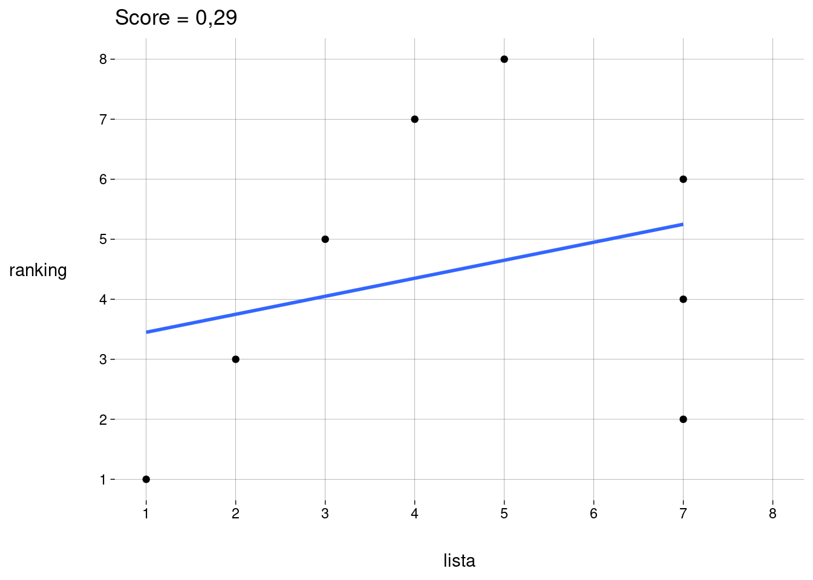
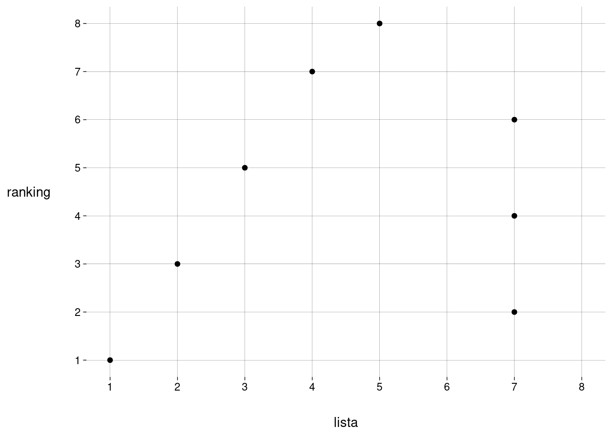

| \(p\) | \(k\) | |||||||||
|---|---|---|---|---|---|---|---|---|---|---|
| 1 | 2 | 3 | 4 | 5 | 6 | 7 | 8 | 9 | 10 | |
| 1 | 1 | |||||||||
| 2 | 1 | 1 | ||||||||
| 3 | 1 | 2 | 1 | |||||||
| 4 | 1 | 3 | 3 | 1 | ||||||
| 5 | 1 | 4 | 6 | 4 | 1 | |||||
| 6 | 1 | 5 | 10 | 10 | 5 | 1 | ||||
| 7 | 1 | 6 | 15 | 20 | 15 | 6 | 1 | |||
| 8 | 1 | 7 | 21 | 35 | 35 | 21 | 7 | 1 | ||
| 9 | 1 | 8 | 28 | 56 | 70 | 56 | 28 | 8 | 1 | |
| 10 | 1 | 9 | 36 | 84 | 126 | 126 | 84 | 36 | 9 | 1 |
| 11 | 1 | 10 | 45 | 120 | 210 | 252 | 210 | 120 | 45 | 10 |
| 12 | 1 | 11 | 55 | 165 | 330 | 462 | 462 | 330 | 165 | 55 |
| 13 | 1 | 12 | 66 | 220 | 495 | 792 | 924 | 792 | 495 | 220 |
| 14 | 1 | 13 | 78 | 286 | 715 | 1.287 | 1.716 | 1.716 | 1.287 | 715 |
| 15 | 1 | 14 | 91 | 364 | 1.001 | 2.002 | 3.003 | 3.432 | 3.003 | 2.002 |
| 16 | 1 | 15 | 105 | 455 | 1.365 | 3.003 | 5.005 | 6.435 | 6.435 | 5.005 |
| 17 | 1 | 16 | 120 | 560 | 1.820 | 4.368 | 8.008 | 11.440 | 12.870 | 11.440 |
| 18 | 1 | 17 | 136 | 680 | 2.380 | 6.188 | 12.376 | 19.448 | 24.310 | 24.310 |
| 19 | 1 | 18 | 153 | 816 | 3.060 | 8.568 | 18.564 | 31.824 | 43.758 | 48.620 |
| 20 | 1 | 19 | 171 | 969 | 3.876 | 11.628 | 27.132 | 50.388 | 75.582 | 92.378 |
| 21 | 1 | 20 | 190 | 1.140 | 4.845 | 15.504 | 38.760 | 77.520 | 125.970 | 167.960 |
| 22 | 1 | 21 | 210 | 1.330 | 5.985 | 20.349 | 54.264 | 116.280 | 203.490 | 293.930 |
| 23 | 1 | 22 | 231 | 1.540 | 7.315 | 26.334 | 74.613 | 170.544 | 319.770 | 497.420 |
| 24 | 1 | 23 | 253 | 1.771 | 8.855 | 33.649 | 100.947 | 245.157 | 490.314 | 817.190 |
| 25 | 1 | 24 | 276 | 2.024 | 10.626 | 42.504 | 134.596 | 346.104 | 735.471 | 1.307.504 |
| 26 | 1 | 25 | 300 | 2.300 | 12.650 | 53.130 | 177.100 | 480.700 | 1.081.575 | 2.042.975 |
| 27 | 1 | 26 | 325 | 2.600 | 14.950 | 65.780 | 230.230 | 657.800 | 1.562.275 | 3.124.550 |
| 28 | 1 | 27 | 351 | 2.925 | 17.550 | 80.730 | 296.010 | 888.030 | 2.220.075 | 4.686.825 |
| 29 | 1 | 28 | 378 | 3.276 | 20.475 | 98.280 | 376.740 | 1.184.040 | 3.108.105 | 6.906.900 |
| 30 | 1 | 29 | 406 | 3.654 | 23.751 | 118.755 | 475.020 | 1.560.780 | 4.292.145 | 10.015.005 |
1 Listas e rankings
1.1 Problema
Vamos trabalhar com listas e rankings sujeitos às seguintes condições:
A lista tem \(k\) elementos, \(k > 0\), não ordenados.
O ranking tem \(p\) elementos, \(p \geq k\), ordenados, sem empates.
Todos os elementos da lista também pertencem ao ranking.
O último elemento do ranking sempre pertence à lista.
As identidades dos elementos do ranking não importam — i.e., eles são indistinguíveis, a não ser por pertencerem ou não à lista (e pela ordem que ocupam no ranking, claro).
1.2 Criando rankings
Quantidade de rankings
Dados \(k > 0\) e \(p \geq k\) fixos, quantos rankings existem?
Para montar um ranking:
Sabemos que a última posição é ocupada por alguém da lista.
Só resta escolher as posições dos \(k - 1\) elementos restantes da lista dentre as \(p - 1\) posições restantes no ranking, o que dá \(\binom{p - 1}{k - 1}\) escolhas.
Assim, a quantidade total de rankings para \(k\) e \(p\) dados é
\[ \binom{p - 1}{k - 1} \]
Representação
Considere naturais \(k > 0\) e \(p \geq k\).
Podemos representar um ranking através de um string contendo \(k\) caracteres “x” e \(p - k\) caracteres “-”.
“x” representa uma posição ocupada por um elemento da lista.
“-” representa uma posição ocupada por um elemento que não está na lista.
Por exemplo, para \(k = 3, p = 5\), os \(\binom{4}{2} = 6\) rankings possíveis são
xx--xx-x-xx--xx-xx-x-x-xx--xxx
A tabela a seguir (na verdade, um pedaço do triângulo de Pascal) mostra as quantidades de rankings possíveis para alguns valores de \(k\) e \(p\):
Criar um ranking a partir de um vetor
Em vez de especificar as \(p\) posições do ranking, pode ser mais compacto especificar as \(k\) posições do ranking que são ocupadas por elementos da lista.
A função rk() faz isso, recebendo um vetor numérico com \(k\) elementos e retornando um string.
rk(c(1, 3, 5, 7))[1] "x-x-x-x"Observe que as posições não precisam ser passadas em ordem:
rk(c(3, 7, 5, 1))[1] "x-x-x-x"A função detecta vetores que não podem representar rankings:
rk(c(3, 7, 3, 1))Error in rk(c(3, 7, 3, 1)): Valores precisam ser inteiros positivos, sem repetições.rk(c(5, 7, 3, 1.5))Error in rk(c(5, 7, 3, 1.5)): Valores precisam ser inteiros positivos, sem repetições.rk(c(5, -7, 3, 1))Error in rk(c(5, -7, 3, 1)): Valores precisam ser inteiros positivos, sem repetições.1.3 Outras funções
Converter para tibble
Para calcular a correlação entre a lista e o ranking, vamos precisar ordenar a lista de alguma forma, pois, se todos os elementos da lista estiverem empatados (i.e., se todos tiverem o mesmo valor de posição), vamos cair em um caso em que o desvio-padrão é \(0\) (quando o ranking só contiver jogadores da lista).
Dado um ranking, a maneira mais conveniente de ordenar a lista afetando a correlação de forma previsível é concordando com o ranking! Isto vai ficar mais claro mais adiante.
Além disso, os elementos que não estavam na lista mas estão no ranking, se existirem, também precisam entrar na tibble.
Eles vão entrar todos empatados no fim da lista, como no exemplo mais abaixo.
A função criar_df() recebe o string correspondente a um ranking e retorna uma tibble com as colunas nome, pos_lista e pos_ranking.
r = 'x-x-x-xx'
df <- criar_df(r)
dfA partir da tibble, o string do ranking pode ser recuperado com
df_string(df)[1] "x-x-x-xx"Criar plot
A função criar_plot recebe um ranking, na forma de string ou de tibble.
A função gera um gráfico de pontos, com um ponto para cada elemento.
No eixo \(x\), a posição do elemento na lista.
No eixo \(y\), a posição do elemento no ranking.
A função criar_plot pode receber um segundo argumento, opcional, especificando uma função para calcular o score deste ranking (i.e., alguma forma de correlação entre o ranking e a lista). O score vai ser mostrado no título do gráfico.
O terceiro argumento especifica se deve ser incluída uma reta de regressão linear via mínimos quadrados. O default é TRUE.
r <- 'x-x-x-xx'
criar_plot(r)
criar_plot(r, reta = FALSE)
Criar uma tibble com todos os rankings
Dados valores de \(p\) e \(k\) (nesta ordem), a função criar_df_rankings() retorna uma tibble com todos os \(\binom{p - 1}{k - 1}\) rankings possíveis.
Se for passado apenas o valor de \(p\), a função retorna uma tibble com todos os rankings possíveis de comprimento \(p\) (com \(k\) variando de \(1\) até \(p\)). Exercício: quantos são?
Cada ranking é representado por um string, como descrito na seção sobre a representação de rankings.
Todos os rankings com \(p = 8\) e \(k = 5\):
criar_df_rankings(8, 5)Todos os rankings com \(p = 5\):
criar_df_rankings(5)